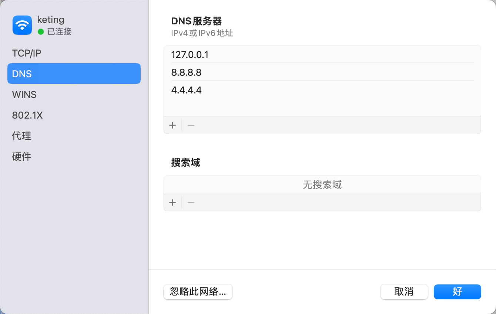
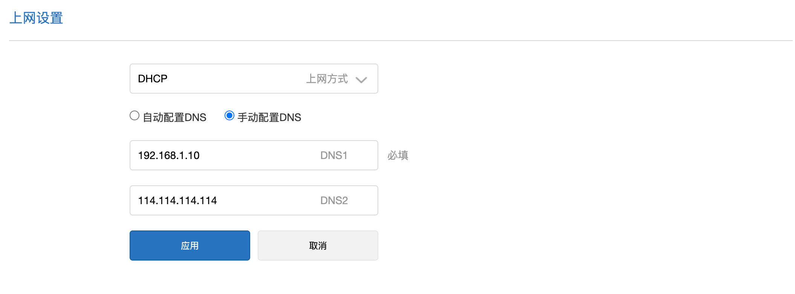

从hosts文件到本地DNS服务
记录MacOS搭建dns服务。
一、背景
当我们的系统平台是提供给众多企业使用（是支持多租户的），通过子域名来区分不同租户。在开发测试阶段，最直接的方法是修改hosts文件来修改域名的指向。起初也是用这种方法作为支撑的，但是发现了hosts文件存在一个问题，它不支持通配符，所以每次新增一个租户，便要修改一次hosts文件。尽管这类工作并不频繁，但也觉之繁琐，于是便决定使用一劳永逸的办法，搭建本地的DNS服务。
二、多租户
通过subdomain来实现业务数据的隔离，大致流程如下图：

1. 修改hosts文件方式
通过修改hosts文件内容，便可实现域名到指定ip的映射，由于不支持通配符（*.saas.com），每加一个租户便要修改此文件。
vim /etc/hosts
#追加以下内容：
192.168.1.10 org_a.saas.com org_b.saas.com org_c.saas.com
2. 修改dnsmasq配置文件方式
通过修改dnsmasq.conf文件内容，支持通配符（*.saas.com）到指定ip的映射；但是要搭建DNS服务。
vim $(brew --prefix)/etc/dnsmasq.conf
#追加以下内容：
address=/.saas.com/192.168.1.10
三、搭建DNS服务
1. MacOS搭建
个人使用时，可以直接在自己的机器上搭建DNS服务，具体步骤如下：
1.1 初次搭建
- 安装：
brew install dnsmasq - 追加配置：
vim $(brew --prefix)/etc/dnsmasq.conf#上游DNS server=8.8.8.8 server=4.4.4.4 server=223.5.5.5 #服务监听地址，设置为127.0.0.1仅限本机使用 #listen-address=127.0.0.1 #服务监听地址，设置为本机在局域网中的地址（192.168.1.10）可以提供给局域网内的其他主机使用 listen-address=192.168.1.10,127.0.0.1 #监听端口，默认配置 port=53 #dns解析记录 不使用通配符 address=/test.com/127.0.0.1 #dns解析记录 使用通配符 address=/.saas.com/192.168.1.10 - 验证配置语法：
dnsmasq --testdnsmasq: syntax check OK. - 启动服务:
sudo brew services start dnsmasq - 刷新DNS:
sudo killall -HUP mDNSResponder - 配置DNS: 添加127.0.0.1位于第一位 
1.2 追加映射步骤
目标：添加域名 *.test.cn 映射至 127.0.0.1；参照以下步骤即可：
- 追加配置信息：
echo 'address=/.test.cn/127.0.0.1' >> $(brew --prefix)/etc/dnsmasq.conf - 重启服务：
sudo brew services restart dnsmasq - 刷新DNS:
sudo killall -HUP mDNSResponder - 验证：
nslookup a.test.cnServer: 127.0.0.1 Address: 127.0.0.1#53 Name: a.test.cn Address: 127.0.0.1
2. Linux搭建
团队使用时，可以选择在服务器上搭建DNS服务，供团队所有成员使用。
- 搭建dnsmasq服务
- 配置路由器DNS 
四、dnsmasq
1. 简介
dnsmasq 提供 DNS 缓存和 DHCP 服务功能。
作为域名解析服务器(DNS)，通过缓存 DNS 请求来提高对访问过的网址的连接速度。
作为DHCP 服务器，dnsmasq 可以用于为局域网电脑分配内网ip地址和提供路由。
2. 主要作用
- 指定域名解析到特定的IP上。
- 智能DNS加快解析速度，为不同的根域名指定不同的上游DNS服务。
#国内指定DNS server=/cn/114.114.114.114 #国外指定DNS server=/google.com/8.8.8.8 - 屏蔽网页广告，将广告域名解析至本地ip。
五、总结
尽管修改hosts是最便捷的方式，但是对于整个团队而言，人人都频繁的修改自己机器的hosts文件，个人感觉也是一件很麻烦的事情；于是选择了dnsmasq服务，事实上，也达到了目的，修改配置文件的频率也大大降低了。